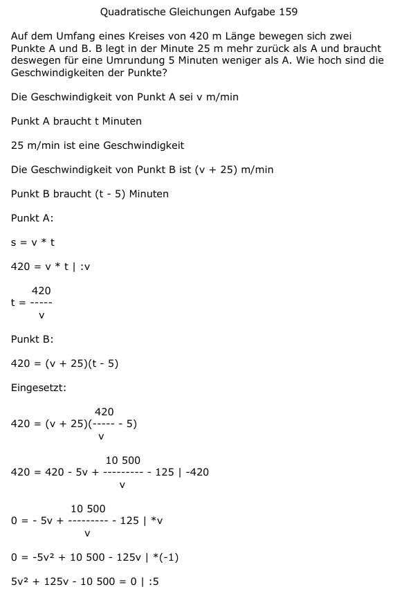

Aufgabe 159 Auf dem Umfang eines Kreises von 420 m Länge bewegen sich zwei Punkte A und B. B legt in der Minute 25 m mehr zurück als A und braucht deswegen für eine Umrundung 5 Minuten weniger als A. Wie hoch sind die Geschwindigkeiten der Punkte? Die Geschwindigkeit von Punkt A sei v m/min Punkt A braucht t Minuten 25 m/min ist eine Geschwindigkeit Die Geschwindigkeit von Punkt B ist (v + 25) m/min Punkt B braucht (t - 5) Minuten Punkt A: s = v * t 420 = v * t | :v 420 t = ----- v Punkt B: 420 = (v + 25)(t - 5) Eingesetzt: 420 420 = (v + 25)(----- - 5) v 10 500 420 = 420 - 5v + -------- - 125 |-420 v 10 500 0 = - 5v + -------- - 125 |*v v 0 = -5v2 + 10 500 - 125v |*(-1) 5v2 + 125v - 10 500 = 0 |:5 v2 + 25v - 2100 = 0 p, q - Formel p = 25 ; q = -2100  v1,2 = -12,5 ± 47,5 v1 = -12,5 + 47,5 = 35 m/min Geschwindigkeit von Punkt A Punkt B hat eine Geschwindigkeit von 35 m/min + 25 m/min = 60 m/min. v2 = -12,5 - 47,5 = -60 m/min keine Lösung, negative Geschwindigkeit